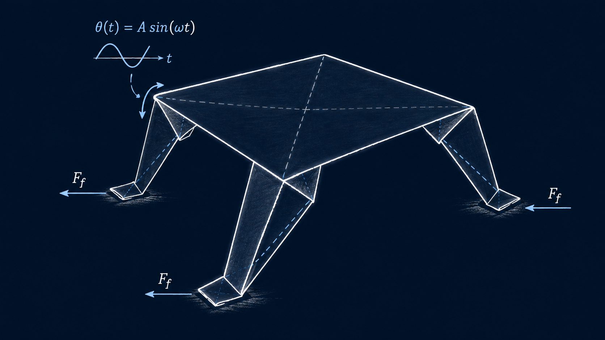

Research Direction
Design, Modeling, and Control of Origami Robots
Combining simple designs with advanced identification-based control to develop flexible origami robots

We investigate origami robots whose locomotion and behavior are governed by the interaction between structural dynamics, contact, and friction. Our work includes controllable friction, carbon-fiber self-sensing, and reduced-order models (ROMs) that enable efficient modeling, state estimation, and control of highly flexible robotic structures.